23 products. Price and stock are simulated. Existing MySQL and frontend remain unchanged.
Manifest SHA-256: 756e772175d291119761cae948a5c242126010a3c84800269b746af825521d1f
{'character': 'Frieren', 'anime': 'Frieren: Beyond Journey’s End', 'model': 'POP UP PARADE Frieren', 'manufacturer': 'Good Smile Company', 'distributor': 'Good Smile Company', 'product_line': 'POP UP PARADE', 'height_mm_approx': 160, 'scale': 'non-scale', 'photo_note': 'Manufacturer promotional prototype photography; not AI images or a guarantee of final retail appearance.'}
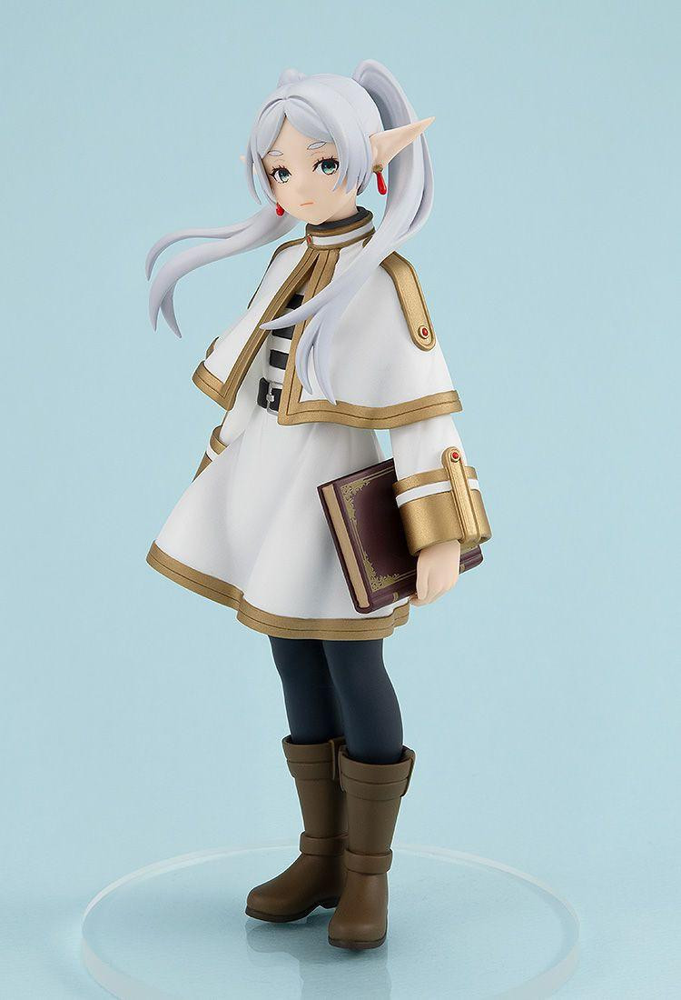
{'character': 'Marin Kitagawa', 'anime': 'My Dress-Up Darling', 'model': 'POP UP PARADE Marin Kitagawa', 'manufacturer': 'Good Smile Arts Shanghai', 'distributor': 'Good Smile Company', 'product_line': 'POP UP PARADE', 'height_mm_approx': 185, 'scale': 'non-scale', 'photo_note': 'Manufacturer promotional prototype photography; not AI images or a guarantee of final retail appearance.'}

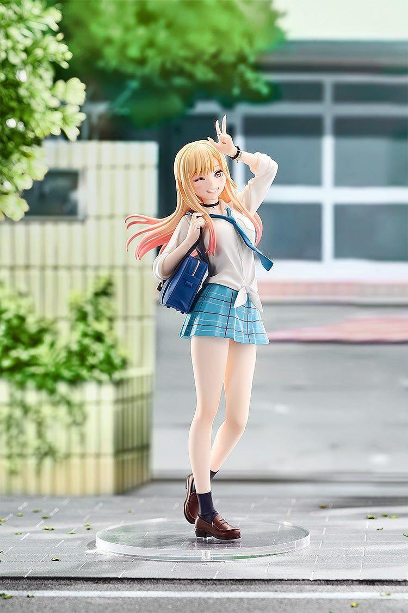
{'character': 'Maomao', 'anime': 'The Apothecary Diaries', 'model': 'Nendoroid 2288 Maomao', 'manufacturer': 'Good Smile Company', 'distributor': 'Good Smile Company', 'product_line': 'Nendoroid', 'height_mm_approx': 100, 'scale': 'non-scale', 'photo_note': 'Manufacturer promotional prototype photography; not AI images or a guarantee of final retail appearance.'}
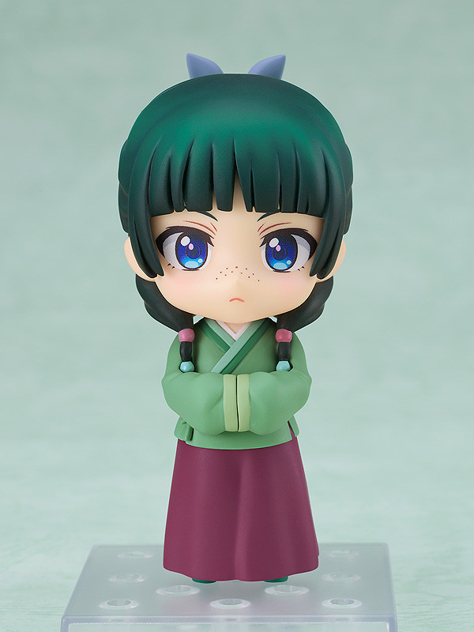
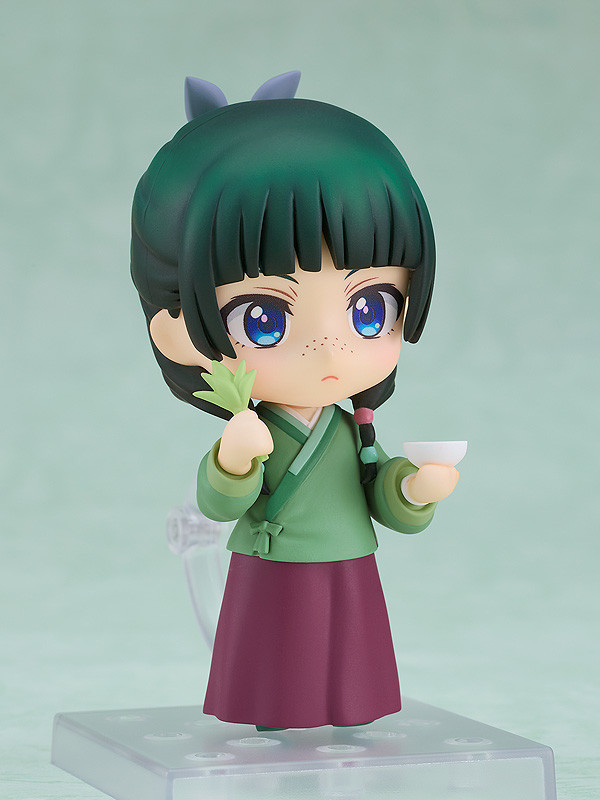
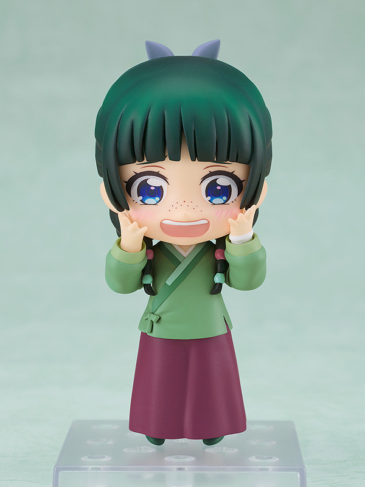
{'character': 'Yor Forger', 'anime': 'SPY × FAMILY', 'model': 'POP UP PARADE Yor Forger', 'manufacturer': 'Good Smile Company', 'distributor': 'Good Smile Company', 'product_line': 'POP UP PARADE', 'height_mm_approx': 170, 'scale': 'non-scale', 'photo_note': 'Manufacturer promotional prototype photography; not AI images or a guarantee of final retail appearance.'}
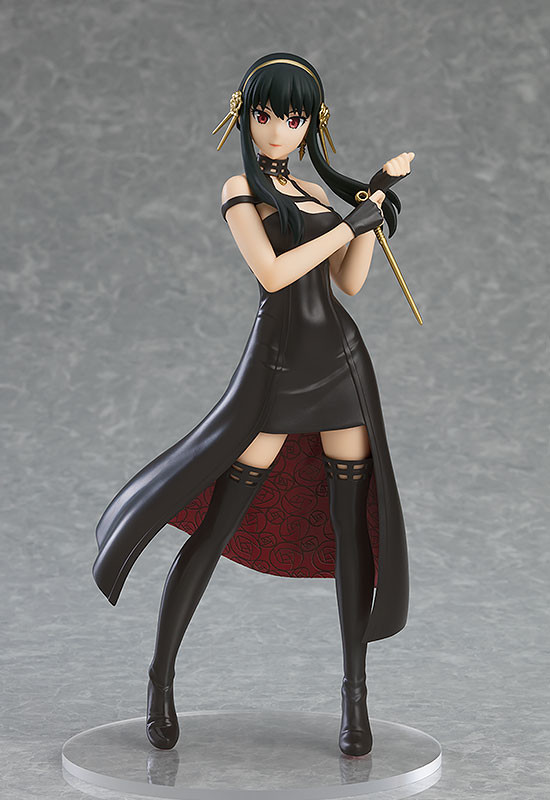
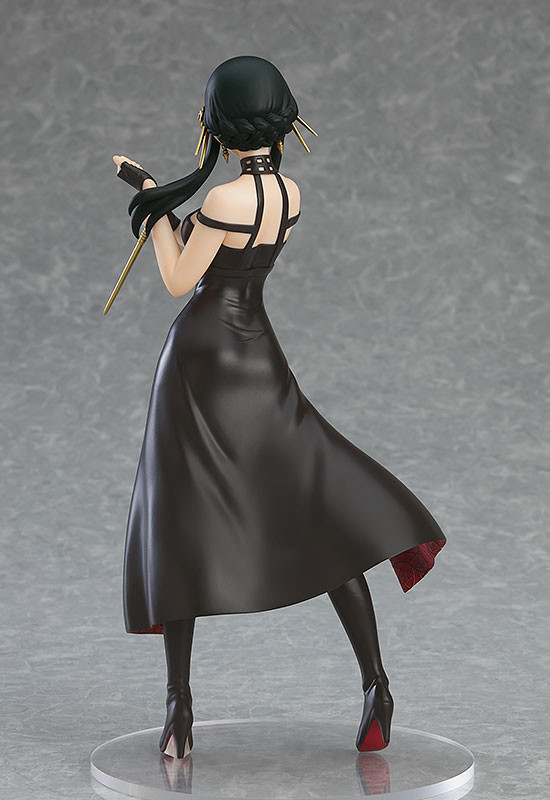
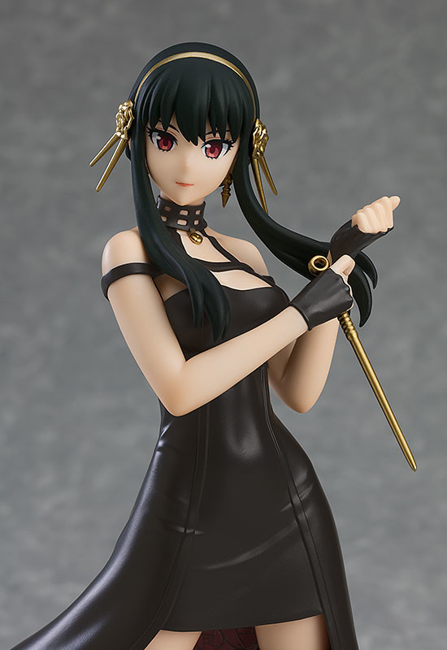
{'character': 'Fern', 'anime': 'Frieren: Beyond Journey’s End', 'model': 'POP UP PARADE Fern', 'manufacturer': 'Good Smile Company', 'distributor': 'Good Smile Company', 'product_line': 'POP UP PARADE', 'height_mm_approx': 170, 'scale': 'non-scale', 'photo_note': 'Manufacturer promotional prototype photography; not AI images or a guarantee of final retail appearance.'}
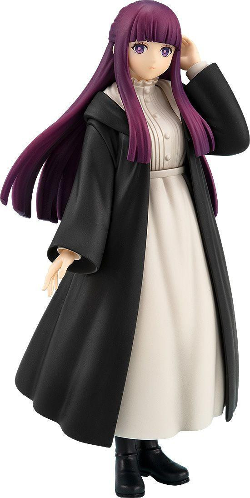
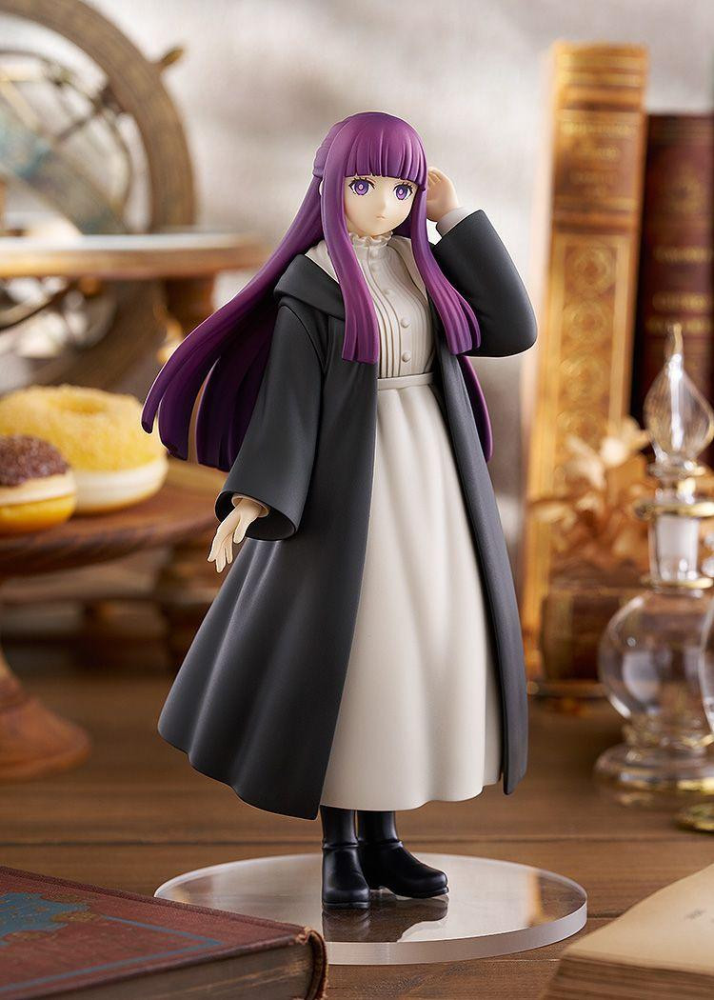
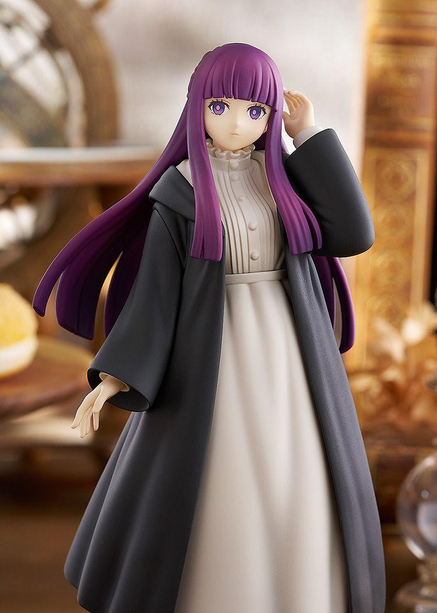
{'character': 'Hitori Gotoh', 'anime': 'Bocchi the Rock!', 'model': 'POP UP PARADE Hitori Gotoh', 'manufacturer': 'Good Smile Company', 'distributor': 'Good Smile Company', 'product_line': 'POP UP PARADE', 'height_mm_approx': 195, 'scale': 'non-scale', 'photo_note': 'Manufacturer promotional prototype photography; not AI images or a guarantee of final retail appearance.'}

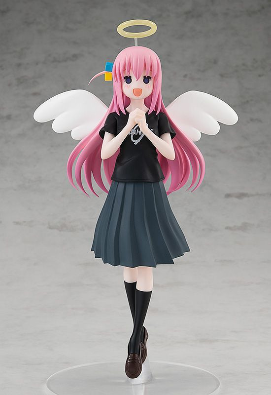
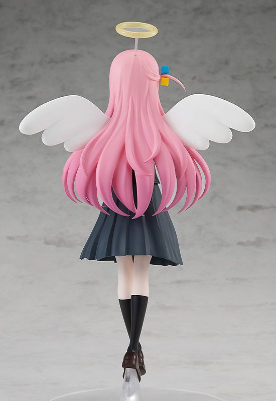